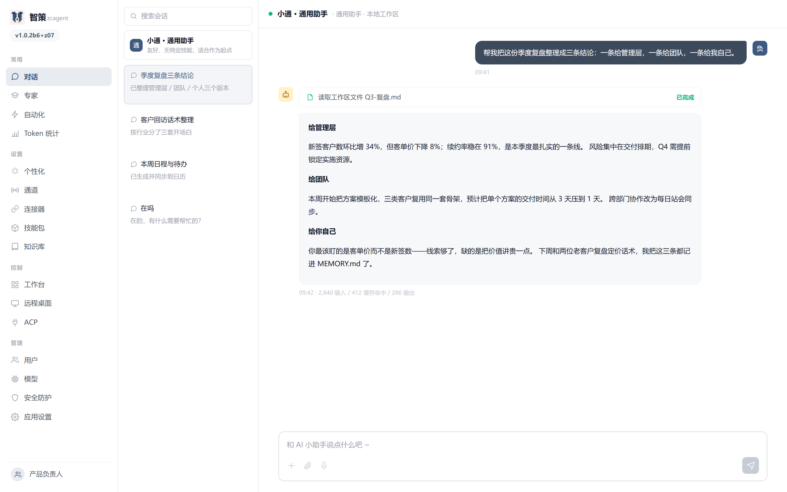
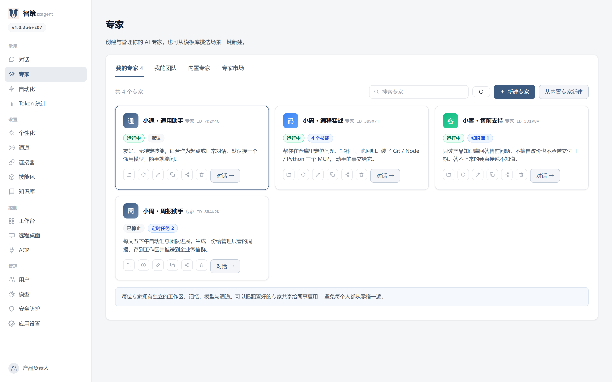
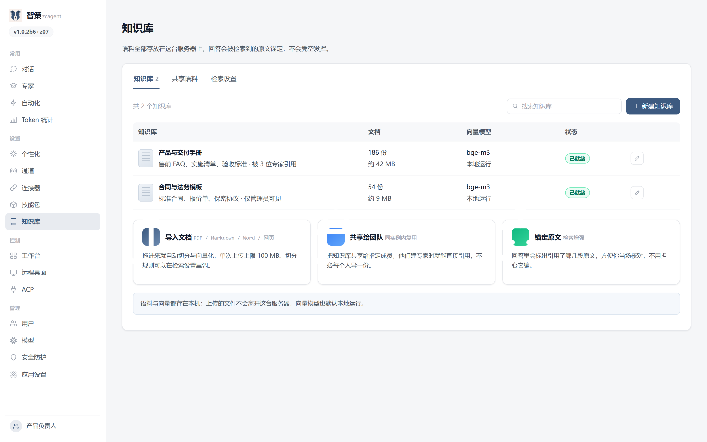
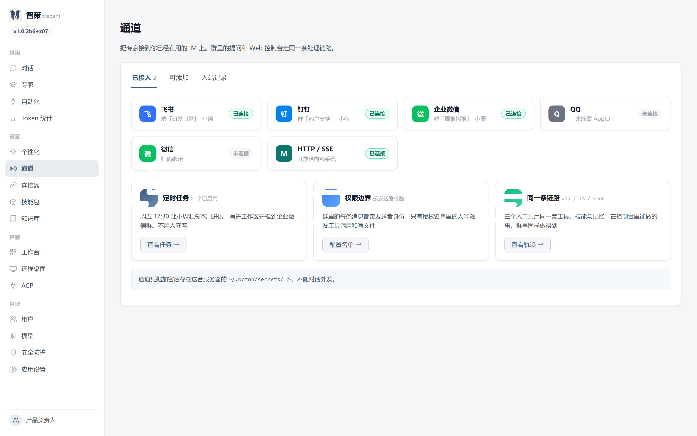
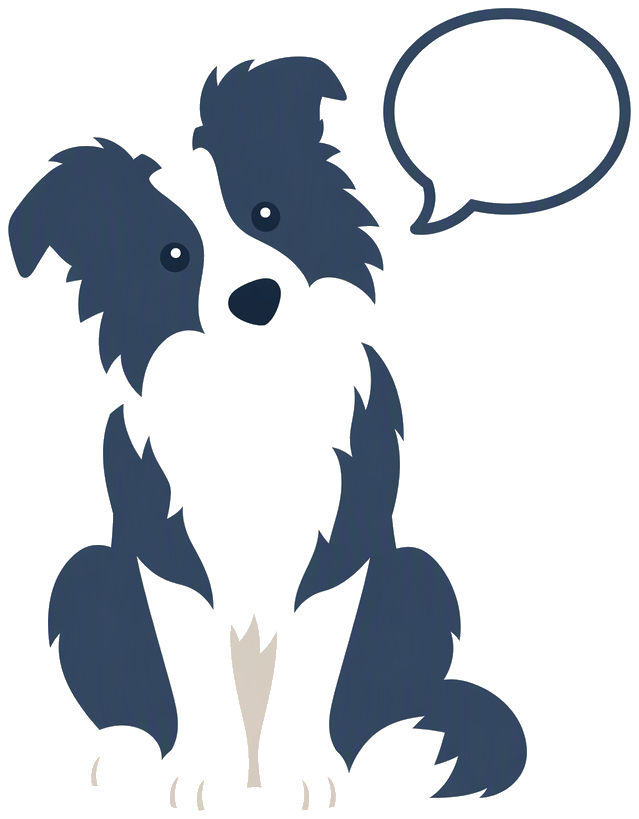

安装版
给日常使用的同事：装完在开始菜单里有图标，带桌面窗口。
-
文件
{{EXE_NAME}} - 大小{{EXE_MIB}} MiB（{{EXE_BYTES}} 字节）
-
SHA256
{{EXE_SHA_SHORT}} - 依赖Microsoft Edge WebView2
{{NAME_ZH}}是一套自托管的多用户 AI 助手平台。一次部署，每位同事都有一位懂自己工作的专属助手； 对话、文件、记忆与凭据，全部留在你自己的服务器上。

装完在浏览器打开 http://127.0.0.1:8088，跟着初始化向导走完就能用。
给日常使用的同事：下载安装版，一路下一步即可。不需要预装 Python 或 Node。
给要审计代码或改造成自己产品的团队。脚本会在
~/.octop 下用 uv 建一个隔离的 Python 3.12 环境，不碰系统 Python。
git clone {{REPO_URL}}.git
cd zcagent
powershell -ExecutionPolicy Bypass -File .\scripts\install.ps1 -FromSource装好后初始化并启动：
octop init
octop run-FromSource 不能省。省掉它，脚本会去 PyPI 装名为
octop 的包——那是上游
{{UPSTREAM}}，不是智策。
octop：上游的协议头、数据目录
~/.octop 与包名都被保留，改了会断掉数据兼容。
当前版本 v{{VERSION}}，发布于 {{RELEASE_DATE}}，实测环境 {{TESTED_ON}}。两个安装包都未做代码签名。
给日常使用的同事：装完在开始菜单里有图标，带桌面窗口。
{{EXE_NAME}}
{{EXE_SHA_SHORT}}
给内网批量部署：解压即用，自带 Python 运行时，不需要装任何东西。
{{ZIP_NAME}}
{{ZIP_SHA_SHORT}}
便携版已实测跑通首启流程：解压约 {{PORTABLE_MIB}} MiB，
start.bat 直接起服务。
两个包都未签名，首次运行 SmartScreen 会拦一次：点
「更多信息」→「仍要运行」即可，这不是拦截。另外，卸载不会删除数据目录——
便携版解压出来的运行时约 {{PORTABLE_MIB}} MiB 会留在
~/.octop 里，重装后可以继续用。
v1.0.2b6（MIT License），以薄 fork 的方式定期合并上游稳定版本。
一台机器跑一套服务，全组共用。按岗位给每个人建一位专家——销售的小通、工程师的小码—— 各自的记忆、模型与工作区互相独立，不用抢同一个上下文。


知识库、文档与全部对话都存在你自己部署的那台机器上。需要接外部服务时，连接器与凭据同样由你保管； 敏感信息在离开工作区前会自动脱敏，高风险工具与命令要显式审批。
接上飞书、钉钉、企业微信或 QQ，任务直接落到群里。定时任务、文件读写与工具调用走的是同一条处理链路—— 你在控制台里看到的，它在 IM 里也做得到。


是。{{NAME_ZH}}基于 MIT 协议的 {{UPSTREAM}} 开发，保留了上游的许可与署名。代码公开，你可以自行审计、修改与分发。
全部在你部署的那台机器上，默认
%USERPROFILE%\.octop：账号、专家、对话、记忆、技能与模型配置都在这里。
程序本身不会把内容联网上报；要不要接外部服务由你决定。
登录页的「忘记密码」在本机部署下会直接给出重置表单，不用开终端；服务端部署仍会显示命令行方式。 这个接口只在服务绑定回环地址、且本机只有一个账号时才开放。
目前只发布 Windows x64 的安装版与便携版。macOS / Linux 与 ARM64 的构建定义都在仓库里， 尚未逐个平台走完安装验收，所以暂不列为可下载项。
支持。JWT 多用户隔离，管理员可以按成员分配不同的专家、知识库与通道，工作区互不可见。
飞书、钉钉、企业微信、QQ、微信，以及 Web 控制台本身。任何入口的消息都归一到同一条处理管线， 工具调用、定时任务与记忆的行为一致。
这是薄 fork + 独立品牌路线的产品，面向企业内网自托管部署。问题反馈与实施支持请通过 仓库的 issue 联系我们。